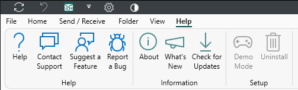
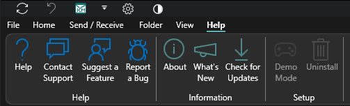
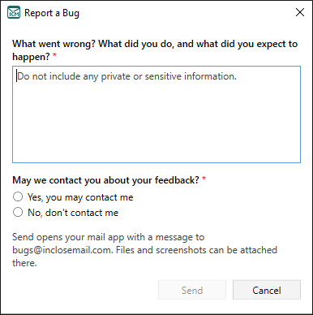
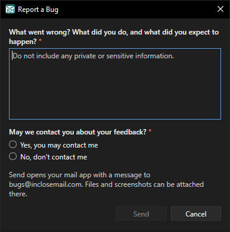

- A signed Windows Installer package (.msi) for silent, per-machine installs.
- Group Policy and Intune templates, and installer settings to limit sign-in to your organization or use your own app registration.
- Admin consent: what InCloseMail asks for, and how to approve it for your organization. See For administrators.
- Uninstall from inside the app (Help → Uninstall), leaving nothing behind if you choose.
- Updates from inside the app, each installer checked for EmuKey’s signature before it runs, with What’s New on the update bar.




- Help and feedback from the Help tab: Suggest a Feature sends us an idea, Report a Bug sends a bug report to bugs@inclosemail.com, and Contact Support asks us a question. Each is sent from your own account, with any files or screenshots you add.




Missing something you used in Outlook? Choose Help → Suggest a Feature in the app. Found a bug? Help → Report a Bug sends a bug report to bugs@inclosemail.com.